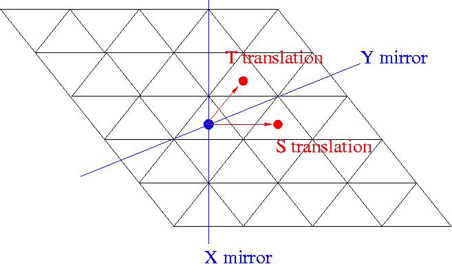

|
|||
|---|---|---|---|
| The
first step in attempting to calculate the cohomology of a group G is to
decide on how best to represent the group. In some cases G will admit a
decomposition into subgroups and quotient groups where the various
component groups need to be represented differently. We try to
illustrate this
with a simple example. Consider the tessellation of the plane R2 by congruent equilateral triangles, and let G be the group of isometries of the plane which preserve this tessellation. 
The group G is generated by two translations S,T together with two reflections X,Y. By using the embedding R2 → R3 (u,v) → (u,v,1) these affine transformations can be represented as 3×3 matrices involving the square root of 3. The following commands construct G. |
|||
| gap>
x:=Indeterminate(Rationals);; gap> p:=x^2-3;; gap> K:=AlgebraicExtension(Rationals,p);; gap> one:=One(K);; gap> rt3:=RootOfDefiningPolynomial(K);; gap> reflectionX:=[[-1,0,0],[0,1,0],[0,0,1]]*one;; gap> reflectionY:=[[1/2,rt3/2,0],[rt3/2,-1/2,0],[0,0,1]]*one;; gap> translationS:=[[1,0,2],[0,1,0],[0,0,1]]*one;; gap> translationT:=[[1,0,1],[0,1,rt3],[0,0,1]]*one;; gap> G:=Group([reflectionX,reflectionY,translationS,translationT]);; gap> P:=Group([reflectionX,reflectionY]);; gap> N:=Group([translationS,translationT]);; |
|||
| The
linear isometries in G form a finite group P (called the point group). The translations S
and T generate a free abelian group N. The general theory of space
groups tells us that N is normal in G and that the quotient G/N is
isomorphic to P. The groups N and P are created above. The
following command shows that P is the symmetric group of degree 3. |
|||
| gap>
StructureDescription(P); "S3" |
|||
| We
can construct a ZP-resolution as
follows. |
|||
| gap>
RP:=ResolutionFiniteGroup(P,12);; |
|||
| Using
the fact that N is free abelian of rank 2 we construct a ZN-resolution
as follows. |
|||
| gap>
RN:=ResolutionAbelianGroup([0,0],12);; gap> fpN:=RN!.group;; gap> fpNhomN:=GroupHomomorphismByImages(fpN,N, GeneratorsOfGroup(fpN),[translationS,translationT]);; gap> RN!.group:=N;; gap> RN!.elts:=List(RN!.elts,x->Image(fpNhomN,x));; |
|||
| We
construct a homomorphism G→P, together with a section P→G, as
follows. |
|||
| gap>
################################ gap> GhomPfn:=function(MM) > local M,i,j; > M:=[]; > for i in [1..3] do M[i]:=[]; > for j in [1..3] do > M[i][j]:=MM[i][j]; > od; > od; > M[1][3]:=0*one; > M[2][3]:=0*one; > return M; > end;; gap> ################################ gap> GhomP:=GroupHomomorphismByFunction(G,P,GhomPfn); gap> PmapG:=function(MM); return MM; end; |
|||
| We
can now combine the ZP-resolution and ZN-resolution into a free
ZG-resolution as follows. |
|||
| gap>
RG:=ResolutionExtension(GhomP,RN,RP,"Don't Test Finiteness", PmapG);; |
|||
| The following commands show that H1(G,Z)=Z2, H2(G,Z)=Z2, H3(G,Z)=Z3+Z3+Z6, H4(G,Z)=Z2 and suggest that the homology is periodic with period 4. | |||
| gap>
TRG:=TensorWithIntegers(RG);; gap> for n in [1..11] do > Print("The homology in dimension ",n," is ",Homology(TRG,n),"\n"); > od; The homology in dimension 1 is [ 2 ] The homology in dimension 2 is [ 2 ] The homology in dimension 3 is [ 3, 3, 6 ] The homology in dimension 4 is [ 2 ] The homology in dimension 5 is [ 2 ] The homology in dimension 6 is [ 2 ] The homology in dimension 7 is [ 3, 3, 6 ] The homology in dimension 8 is [ 2 ] The homology in dimension 9 is [ 2 ] The homology in dimension 10 is [ 2 ] The homology in dimension 11 is [ 3, 3, 6] |
|||
| The following
command shows however that the resolution RG is not periodic with
period 4. |
|||
| gap>
List([1..11],n->RG!.dimension(n)); [ 4, 8, 12, 16, 21, 28, 36, 44, 52, 60, 68 ] |
|||
| The
following command yields the presentation <s, t, a, y | a3 =
y2 = (ay)2 = sat-1sa-1 =
tasa-1 = (sy)2 = tyt-1sy, tst-1s-1
>
for the infinite group G.
|
|||
| gap>
PresentationOfResolution(RG); rec( freeGroup := <free group on the generators [ f1, f2, f3, f4 ]>, relators := [ f4^2, f3^3, f3*f4*f3*f4, f1*f3*f2^-1*f1*f3^-1, f2*f3*f1*f3^-1, f1*f4*f1*f4, f2*f4*f2^-1*f1*f4, f2*f1*f2^-1*f1^-1 ] ) |
|||
| A
periodic ZG-resolution can be obtained by replacing the above
ZP-resolution by a periodic one. The following additional commands
construct such a periodic ZG-resolution. |
|||
| gap>
F:=FreeGroup(2);; gap> relators:=[ F.1^2, F.1*F.2*F.1^-1*F.2^-2 ];; gap> RP:=ResolutionSmallFpGroup(F/relators,12);; gap> hom:=GroupHomomorphismByImagesNC(RP!.group,P, GeneratorsOfGroup(RP!.group), [reflectionX,reflectionX*reflectionY]);; gap> Order(Kernel(hom)); 1 gap> Order(Image(hom)); 6 gap> # So hom is an isomorphism. gap> RP!.group:=P;; gap> RP!.elts:=List(RP!.elts,x->Image(hom,x));; gap> RG:=ResolutionExtension(GhomP,RN,RP,"Don't Test Finiteness", PmapG);; gap> List([1..11],n->RG!.dimension(n)); [ 4, 7, 7, 5, 5, 7, 7, 5, 5, 7, 7 ] |
|||
| The
above techniques can be applied to any almost crystallographic group G
(that is, a nilpotent-by-finite group G with no non-trivial finite
normal subgroups).
Such groups can be produced using the Cryst and AClib packages. The function ResolutionAlmostCrystalGroup(G,n) allows one to construct the resolution directly if G is an almost crystallographic pcp group. For example, the following commands compute the ranks of the mod 2 cohomology of a 2-dimensional space group with point group equal to the cyclic group of order 4. |
|||
| gap>
G:=SpaceGroup(2,10);; gap> StructureDescription(PointGroup(G)); "C4" gap> G:=Image(IsomorphismPcpGroup(G));; gap> R:=ResolutionAlmostCrystalGroup(G,6);; gap> HomR:=HomToIntegersModP(R,2);; gap> for n in [1..5] do > Print("The mod 2 cohomology in dimension ",n," has rank ",Cohomology(HomR,n),"\n"); > od; The mod 2 cohomology in dimension 1 has rank 2 The mod 2 cohomology in dimension 2 has rank 3 The mod 2 cohomology in dimension 3 has rank 3 The mod 2 cohomology in dimension 4 has rank 3 The mod 2 cohomology in dimension 5 has rank 3 |
|||
| An
almost crsystallographic group G has a normal nilpotent subgroup T of
finite index. We define T1=T and Tc+1=[Tc,G].
The command ResolutionAlmostCrystallographicQuotient(G,n,c) produces a
free ZQ-resolution for the group Q=G/Tc. The following commands calculate the ranks of the mod 2 cohomology of Q=G/Tc for the preceding space group G and c=2,3,4,5. |
|||
| gap>
#CASE C=2. gap> S:=ResolutionAlmostCrystalQuotient(G,6,2);; Q:=S!.group;; gap> Order(Q); 8 gap> Coclass(Q); 2 gap> HomS:=HomToIntegersModP(S,2);; gap> for n in [1..5] do > Print("The mod 2 cohomology in dimension ",n," has rank ",Cohomology(HomS,n), "\n"); > od; The mod 2 cohomology in dimension 1 has rank 2 The mod 2 cohomology in dimension 2 has rank 3 The mod 2 cohomology in dimension 3 has rank 4 The mod 2 cohomology in dimension 4 has rank 5 The mod 2 cohomology in dimension 5 has rank 6 gap> #CASE C=3. gap> S:=ResolutionAlmostCrystalQuotient(G,6,3);; Q:=S!.group;; gap> Order(Q); 16 gap>Coclass(Q); 2 gap> HomS:=HomToIntegersModP(S,2);; gap> for n in [1..5] do > Print("The mod 2 cohomology in dimension ",n," has rank ",Cohomology(HomS,n), "\n"); > od; The mod 2 cohomology in dimension 1 has rank 2 The mod 2 cohomology in dimension 2 has rank 4 The mod 2 cohomology in dimension 3 has rank 6 The mod 2 cohomology in dimension 4 has rank 9 The mod 2 cohomology in dimension 5 has rank 12 gap> #CASE c=4. gap> S:=ResolutionAlmostCrystalQuotient(G,6,4);; Q:=S!.group;; gap> Order(Q); 32 gap>Coclass(Q); 2 gap> HomS:=HomToIntegersModP(S,2);; gap> for n in [1..5] do > Print("The mod 2 cohomology in dimension ",n," has rank ",Cohomology(HomS,n), "\n"); > od; The mod 2 cohomology in dimension 1 has rank 2 The mod 2 cohomology in dimension 2 has rank 4 The mod 2 cohomology in dimension 3 has rank 6 The mod 2 cohomology in dimension 4 has rank 9 The mod 2 cohomology in dimension 5 has rank 12 gap> #CASE c=5. gap> S:=ResolutionAlmostCrystalQuotient(G,6,5);; Q:=S!.group;; gap> Order(Q); 64 gap> Coclass(Q); 2 gap> HomS:=HomToIntegersModP(S,2);; gap> for n in [1..5] do > Print("The mod 2 cohomology in dimension ",n," has rank ",Cohomology(HomS,n), "\n"); > od; The mod 2 cohomology in dimension 1 has rank 2 The mod 2 cohomology in dimension 2 has rank 4 The mod 2 cohomology in dimension 3 has rank 6 The mod 2 cohomology in dimension 4 has rank 9 The mod 2 cohomology in dimension 5 has rank 12 |
|||
| A
finite group of order pn and nilpotency class c is said to
have coclass r=n-c. It was
shown by Charles Leedham-Green and others [C.Leedham-Green, The
structure of finite p-groups, J.
London Mathematical Society, (2) 50 (1994) 49-67] that, with a
finite number of exceptions, every p-group of coclass r is associated
to one of only a finite number of p-adic uniserial space
groups G. In particular, for sufficiently large m the groups G/Tm
all have
coclass r. The above calculations are consistent with the conjecture
that almost all groups of coclass r associated to a particular space
group G have "very similar cohomological properties". For the prime p=2 it is known [J. Carlson, Coclass and cohomology, J Pure Applied Algebra 200 (2005) 251-266] that there are only finitely many isomorphism classes of mod 2 cohomology rings of 2-groups of a given coclass r. |
|||
|